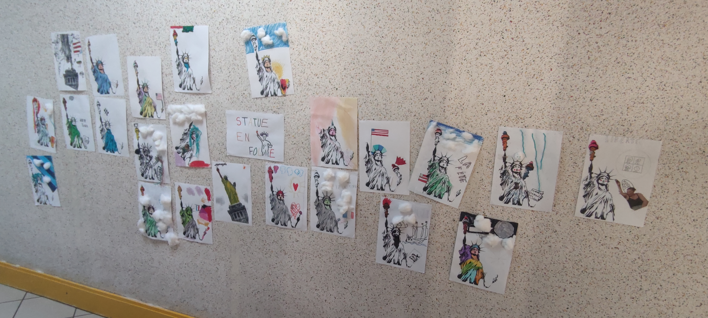
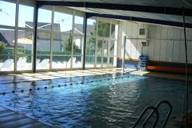

Lundi 31 mars
Aujourd'hui, la classe de ce2 a de nouveau franchi les portes du musée du théâtre forain pour poursuivre les répétitions de leur pièce : Le Tour du Monde en 80 Jours.
Pour ceux qui ne connaissent pas encore cette célèbre aventure de Jules Verne, en voici un petit résumé :
En 1872, Phileas Fogg, un gentleman londonien aussi calme qu’élégant, parie la moitié de sa fortune qu’il réussira à faire le tour du monde en 80 jours. Accompagné de son fidèle domestique Passepartout, il se lance dans une course effrénée à travers les continents, affrontant imprévus, tempêtes et embûches pour tenter de gagner son pari.
Les élèves prennent leur rôle très à cœur, et l’enthousiasme est palpable à chaque répétition. Nous avons hâte d’en découvrir davantage sur ce beau projet en devenir !

Mardi 1 avril
Aujourd’hui, place aux nouvelles créations des élèves de CM1 !
Ce matin, en arrivant à l’école, les élèves ont découvert avec fierté leur toute dernière œuvre d’art.
Le projet, joliment intitulé “Statue en folie !”, met à l’honneur la célèbre Statue de la Liberté… mais pas comme on l’a déjà vue !
Chacun y a apporté sa touche personnelle, redécorant cette icône mondiale avec créativité, couleurs et fantaisie. Le résultat ? Une explosion d’imagination !
Bravo aux artistes en herbe pour leur inventivité !
Jeudi 3 avril
Aujourd’hui, on va à la piscine !
La classe de CP-CE1 a participé à sa première séance de natation au BAF de Patay.
Encadrés par leur enseignante, Xavier, le maître-nageur sauveteur, et Paul, en service civique à l’école, les élèves ont pu vivre cette expérience dans un cadre sécurisé et parfaitement adapté à leur âge.
Entre découverte, jeux aquatiques et premiers déplacements dans l'eau, chacun a pu apprivoiser le milieu aquatique à son rythme… et avec le sourire !
Vendredi 4 avril
Aujourd’hui, on va voir un spectacle au théâtre !
Cet après-midi, les élèves de CM2 ont eu l'occasion de voir en avant-première un spectacle intitulé La Devise, une pièce à la fois drôle, intelligente et engagée.
Mais de quoi s'agit-il exactement ?
« Un comédien est missionné pour parler aux jeunes afin de redonner du sens à notre devise nationale. Une comédienne l’assiste dans cette opération, et tous deux répètent l’intervention, la préparent. Les interprétations fusent, et de la dispute vient la discute. Les deux se lancent dans une joute oratoire pleine d’humour et d’idées, de saveurs à partager, à débattre. »
Ce spectacle est porté par la compagnie Le Théâtre des Uns, des Cents, active depuis 2010 avec pour ambition de rendre le théâtre accessible à tous, aussi bien en tant que spectateurs qu’en tant que participants. Une belle expérience culturelle, riche en échanges et en sens !